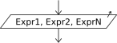

Output

The Write instruction lets you display values to the environment.
Escribir <expr1> , <expr2> , ... , <exprN> ;
This instruction outputs the values obtained by evaluating N expressions. Since it may include one or more expressions, it displays one or more values. If more than one expression is used, they are written one after another with no separator, so the algorithm must include the required spaces explicitly if it needs to distinguish the results.
If the keywords "SIN SALTAR" or "SIN BAJAR" appear anywhere in the line, the values are shown on the screen but the cursor does not advance to the next line, so the next input or output action continues on the same line. Otherwise, a line break is added after the displayed expressions.
Escribir Sin Saltar <expr1> , ... , <exprN>;
Escribir <expr1> , ... , <exprN> Sin Saltar;
If the selected language profile allows flexible syntax, you can use Imprimir and Mostrar instead of Escribir. In that case, the expressions may also be separated with spaces instead of commas. This is configured in the PSeudoCode Options dialog.
The Sum example shows a very simple program that reads two numbers, using the Write instruction to show the prompts for the user and the resulting sum.